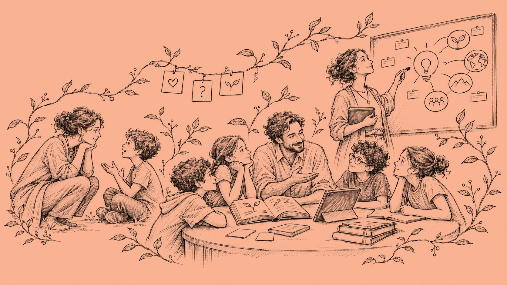
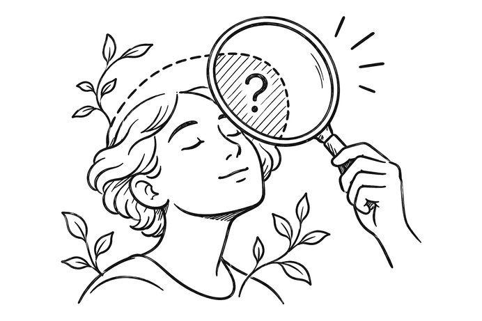
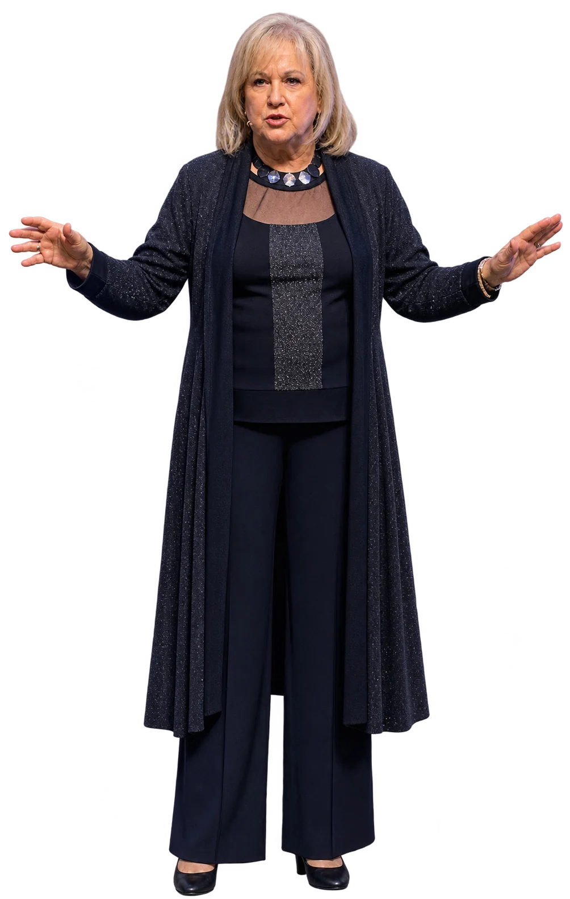
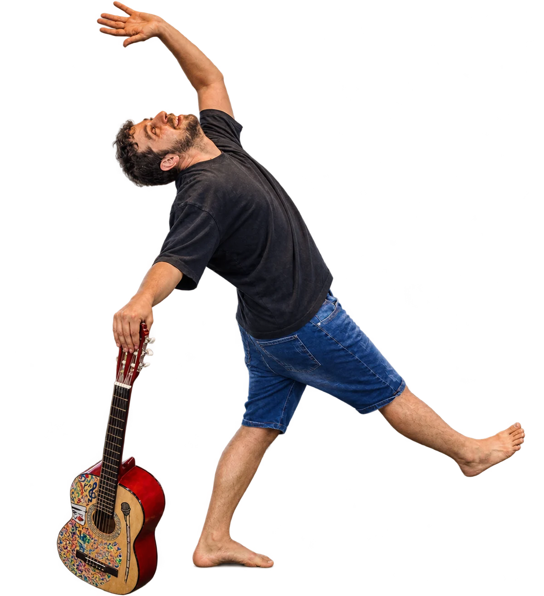

כתבת תוכן
כשרואים אדם, הוא נהיה ראוי
ניהול. וניהול משאבי אנוש בביה"ס.

והאם זו השאלה הנכונה שעל מנהלים לשאול?
כתבת תוכן
ניהול. וניהול משאבי אנוש בביה"ס.
כתבת תוכן
מה יכול מנהל לקחת מהנחיית קבוצות?
כתבת תוכן
למה קשה להפוך מורות ומורים לשייכים
ועל מה צריך מנהל לוותר?

שש דרכים לזהות את מה שמחוץ לטווח הראייה

על ניהול ופיתוח הון אנושי
עם איציק אשכנזי. מנהל ביה"ס גולדה פ"ת.
עם שלומית קמינקא. מייסדת ומנכ"לית "משאבי אנוש
ישראל"
כיצד נאפשר למורות ולמורים להיות טובים יותר?

יוסי רבינוביץ
שחקן נשמה. AI SuperUser. מנהל ביה"ס
"צליל למצוינות". נתניה.
תרבות שמעוררת שאלות